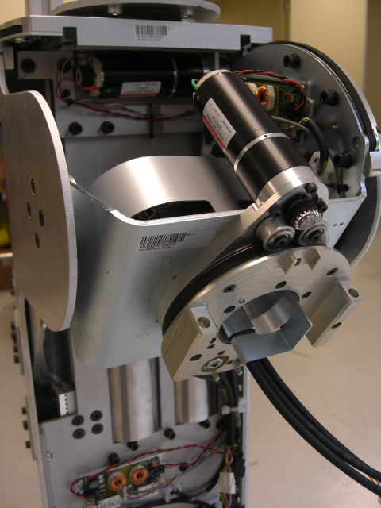

You are testing the shoulder:

Make sure that the power and ethernet cables are attached.
Place bubble wrap above the shoulder counterbalance to prevent damage to the mechanism. Move the counterbalance attachment out of the way of the shoulder life.
Secure the top of the shoulder down to ensure that the calibration flag trips the optical sensor. Do this with either a 20# weight on top, or screws if available.